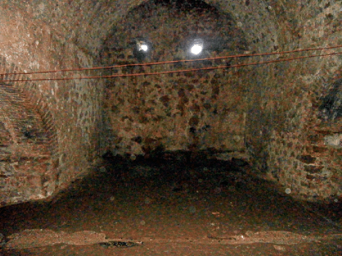
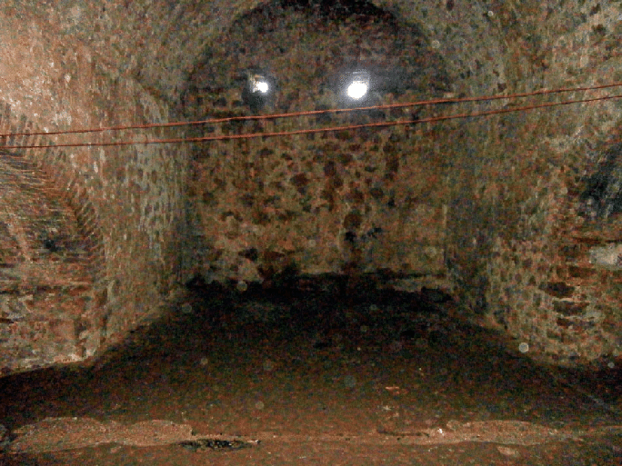
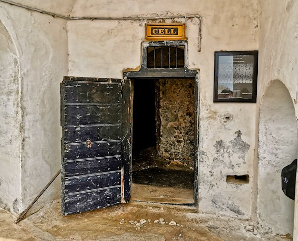
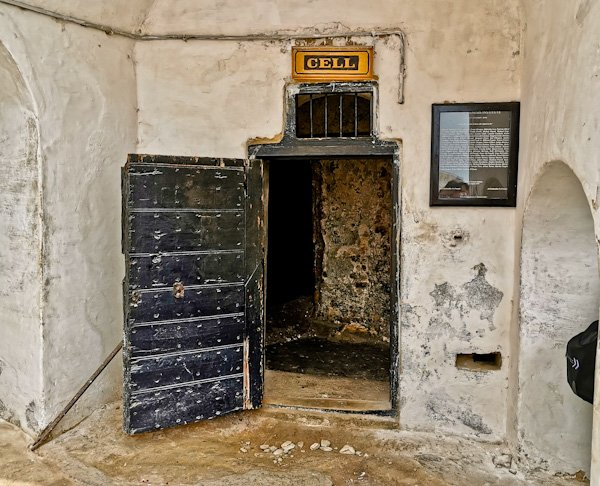

Image of the Cape Coast Castle in in 1626

Cape Coast Castle, initially established by the Portuguese in the late 15th century, was strategically located along the Gold Coast of West Africa.
Originally intended as a trading post for goods such as gold, ivory, and timber, its significance grew over time as European powers vied for control of the lucrative trade routes.
In the 17th century, the castle saw a shift in its purpose as the demand for enslaved laborers surged in the Americas. It became a central hub for the transatlantic slave trade, with thousands of enslaved Africans passing through its gates. The castle's dungeons, originally designed to store goods, were repurposed to hold human captives awaiting transport across the Atlantic Ocean.
The conditions within the dungeons were abhorrent, with overcrowding, disease, and starvation rampant. Many enslaved Africans perished within the castle walls before they could ever embark on the treacherous journey across the ocean. The castle became a symbol of unimaginable suffering and exploitation, reflecting the brutality and inhumanity of the transatlantic slave trade.
Under various European administrations, including the Dutch and the British, Cape Coast Castle was expanded and fortified to accommodate the growing slave trade. It became a sprawling complex, with additional structures added to house European administrators, soldiers, and traders. Despite its grim reputation, the castle remained a crucial asset for European colonial powers seeking to profit from the exploitation of African labor.
Today, Cape Coast Castle stands as a UNESCO World Heritage Site and a powerful testament to the resilience of the African people. Its imposing walls and somber dungeons serve as a poignant reminder of the enduring legacy of slavery and the devastating impact it had on millions of lives. Visiting the castle is a sobering experience, offering visitors a glimpse into the dark history of human exploitation and the importance of preserving and remembering this painful chapter in human history.
See more info: The Cape Coast Castle
Nestled ominously along the unforgiving shores of the Gold Coast of West Africa, Cape Coast Castle stands as a haunting monument to the depths of human cruelty and suffering. Its looming presence, cloaked in shadows and sorrow, serves as a grim reminder of the atrocities committed in the name of greed and power during the era of European colonialism.
Approaching Cape Coast Castle, one is greeted not by grandeur, but by a sense of foreboding. The gateway, adorned with grotesque carvings and weathered stone, exudes an aura of malevolence. Beyond lies a courtyard devoid of life, its once-bustling activity replaced by an eerie silence that echoes through the corridors of time.
Within the castle's confines, the church stands as a mockery of faith and compassion. Its sacred halls, tainted by the sins of its patrons, bear witness to a twisted interpretation of divine authority. Here, European settlers sought solace in their hypocrisy, using religion as a tool of oppression and control.
Adjacent to the church, the governor's room serves as the seat of colonial power and privilege. Adorned with opulent furnishings and adorned with symbols of wealth, this chamber reeks of decadence and disdain. It is here that the fate of nations was sealed, and the lives of countless innocents were traded for profit.
Beneath the castle's facade of stone lies a labyrinth of despair – the dungeons. Descending into the abyss, one is engulfed by darkness and despair. The air is thick with the stench of death, and the walls reverberate with the anguished cries of those who suffered within. Here, humanity was stripped bare, reduced to mere chattel in the merciless pursuit of wealth.
At the water's edge stands the Door of No Return, a macabre monument to human cruelty. Through this portal, countless souls were condemned to a fate worse than death – a fate from which there was no escape. The crashing waves below serve as a grim chorus, bearing witness to the countless lives lost to the abyss.
Today, Cape Coast Castle stands as a silent sentinel, its crumbling walls a testament to the horrors of the past. As visitors wander its haunted halls, they are confronted not only by the darkness of history but also by the shadows of their own complicity. For in the heart of Cape Coast Castle lies a mirror, reflecting the darkest depths of humanity's soul.
In the shadow of Cape Coast Castle, amidst its crumbling ramparts and decaying dungeons, one finds not only a monument to the past but also a warning for the future. May we heed its call, lest we be consumed by the darkness that lurks within us all.


 



 
